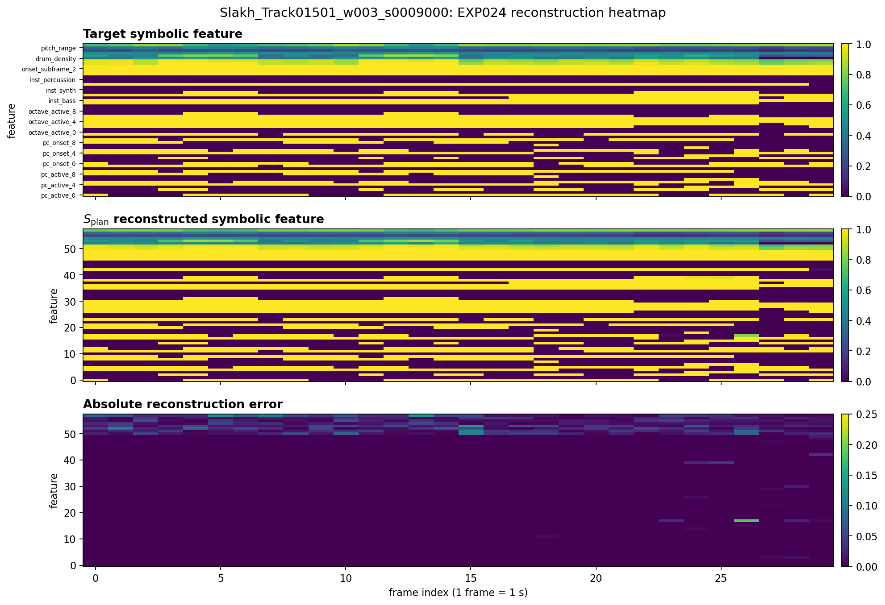
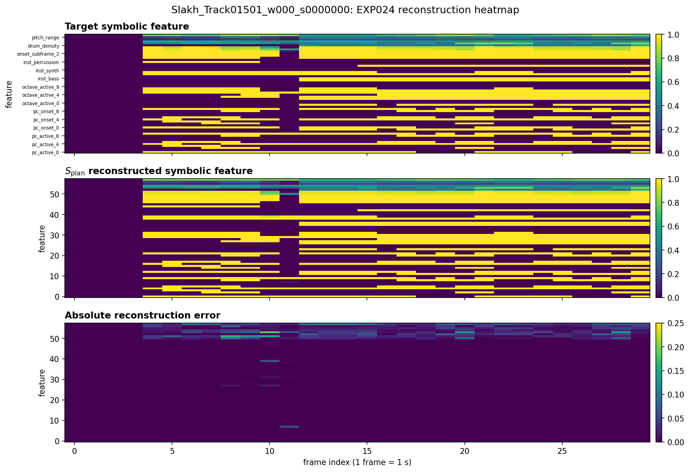
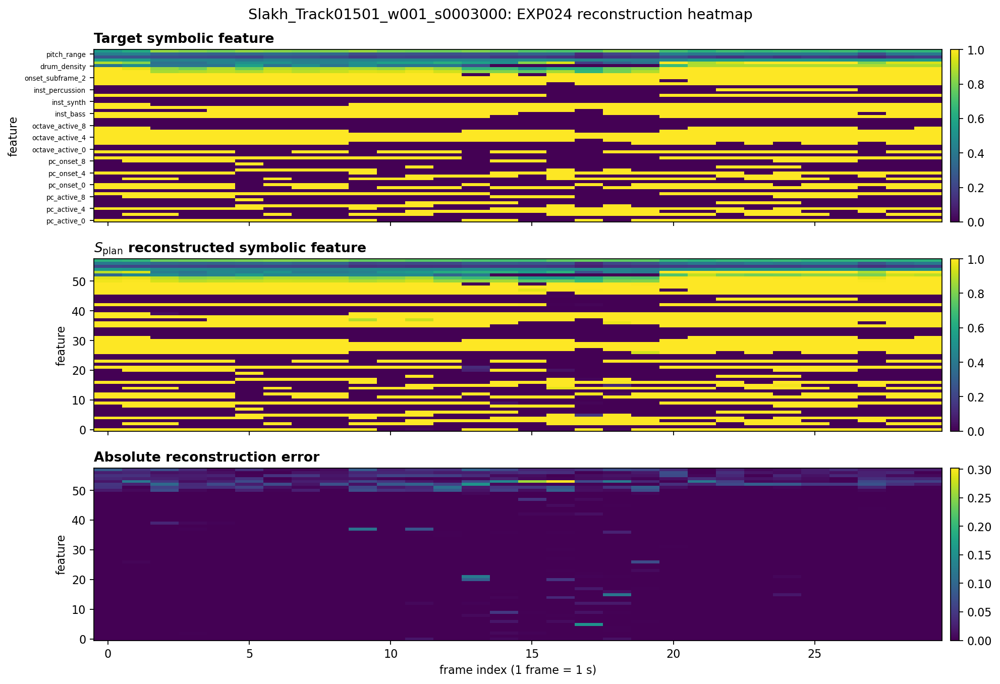
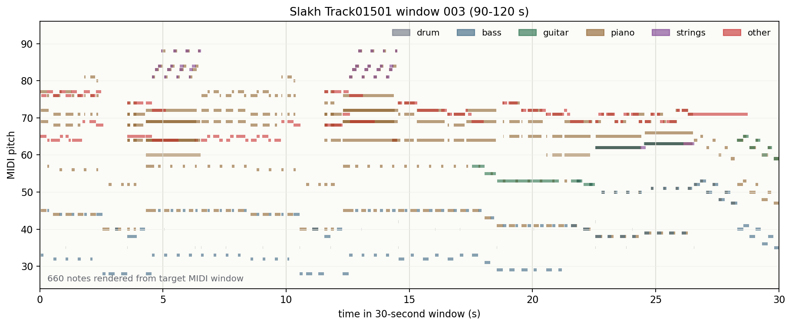
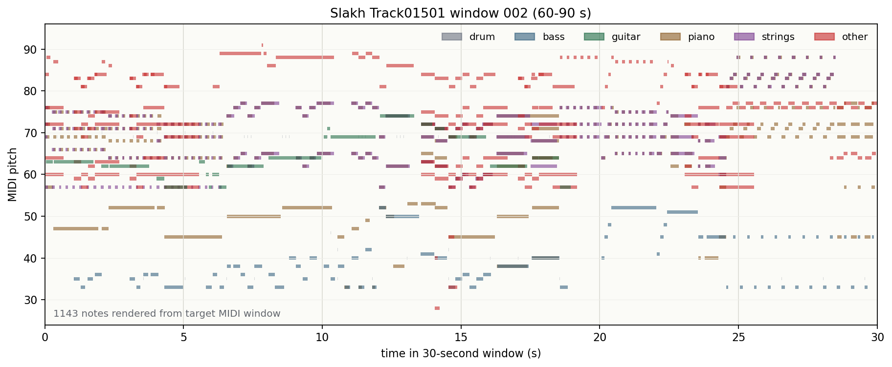
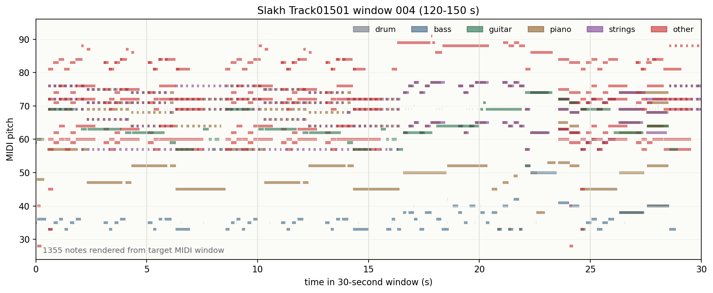
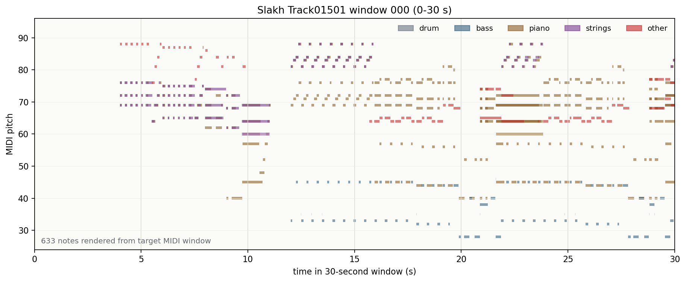
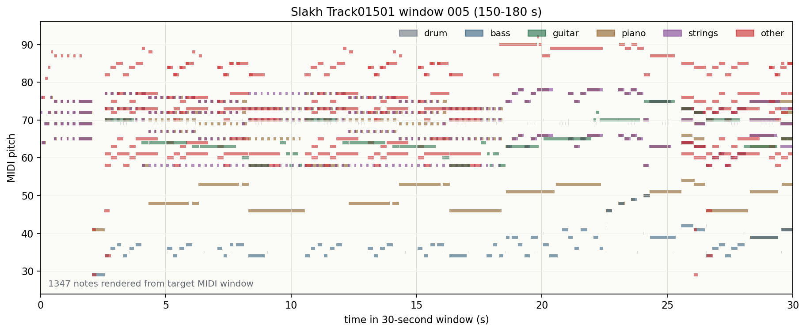

This page keeps the current claim boundary explicit: \(S_{\mathrm{plan}}\)
is the learned symbolic planning token evaluated through reconstruction,
acoustic-token proxy, stream controls, and MIR recovery; \(S_{\mathrm{LLM}}\)
is the planned LLM-supervised symbolic tokenizer/token stream and is not
trained yet.
Current evidence supports \(S_{\mathrm{plan}}\) as a compact, MIDI-derived
symbolic planning codec with measurable acoustic-token and MIR-structure
utility. It does not yet establish decoded music generation,
audio-to-MIDI transcription, or LLM-supervised \(S_{\mathrm{LLM}}\) training.
Evidence Boundary
Current token\(S_{\mathrm{plan}}\)
Learned symbolic planning token from MIDI-derived structure. Evaluated through reconstruction, acoustic-token proxy, stream controls, and MIR recovery.
Planned token\(S_{\mathrm{LLM}}\)
LLM-supervised symbolic tokenizer/token stream. Not trained yet; should follow EXP031A controls.
Demo assetsSlakh paired audio/MIDI
All playable clips in this page are project-local Slakh audio assets, avoiding copied web-audio dataset material.
Evidence provenance
Held-Out Evaluations versus Case-Study Examples
The demo separates held-out test-set aggregate results from fixed per-sample examples.
EXP001 uses Slakh test QA outputs directly. EXP025, EXP029, and EXP031A
include test-set aggregate metrics, while the currently saved per-sample
fixed examples mostly come from validation windows. Missing assets are left
as explicit red placeholders rather than being hidden.
Block
Actual artifact
Split
What the demo can claim
UniAudio compatibility
EXP006 sanity slots + EXP001 Slakh QA model outputs
test summaries + placeholders
Frozen UniAudio2 sanity and brittle music-QA behavior; not a symbolic contribution
Symbolic codec
EXP024 \(S_{\mathrm{plan}}\) reconstruction RVQ
valid/test aggregate + validation fixed examples
Compact MIDI-derived structure can be reconstructed before downstream use
Acoustic utility bridge
EXP025 acoustic-token utility proxy
test aggregate
Aligned \(S_{\mathrm{plan}}\) reduces semantic acoustic-token uncertainty versus controls
Music stream gain
EXP029 stream-control final metrics + fixed examples
test aggregate + validation examples
Aligned \(S_{\mathrm{plan}}\) improves token-level UniAudio-style stream proxy; examples are illustrative
MIR structure is recoverable, but controls and claim boundaries remain active
Evaluation protocol
Shared Slakh Audio-MIDI Split for Symbolic-Control Experiments
EXP025, EXP029, EXP034, and the EXP035 decoded-rollout export share the
same Slakh paired audio/MIDI cache structure: fixed track-level splits,
non-overlapping 30 s windows, frozen UniAudio2 \(R_a/C_a\) tokens, and
learned \(S_{\mathrm{plan}}\) RVQ tokens.
Training11,279 windows
75.2%
Validation2,334 windows
15.6%
Test1,385 windows
9.2%
Window length30 s
Total windows14,998
\(S_{\mathrm{plan}}\) frames30 / window
RVQ depth4 books
\(R_a\) frames151 / window
\(C_a\) frames376 / window
Audio codebooks8 + 8
Split policyTrack-level
Config axis
Setting
Why it matters
Source
Slakh paired rendered audio and aligned MIDI
Keeps symbolic labels grounded in the same musical window as the audio tokens.
Cache row
Audio path, MIDI path, UniAudio2 \(R_a/C_a\), and \(S_{\mathrm{plan}}\)
Allows matched ablations where only the symbolic stream changes.
Evaluation role
Validation for fixed examples; test for aggregate claims
Prevents illustrative demo cases from replacing held-out aggregate evidence.
Evidence by Task Family
Task family 01
UniAudio 2.0 Audio / Speech Tasks
This block tracks non-music audio and speech task families inherited
from UniAudio 2.0 that a future final LALM integration must preserve.
It is not yet a completed final-LALM preservation claim.
Frozen UniAudio2.0 Task Anchors for Future Preservation Checks
Caption: these rows anchor the released UniAudio2.0 behavior before any
Symbolic-Aware LALM claim. The baseline metrics or generated wavs are
already available; what remains missing is the paired Symbolic-Aware
checkpoint output under the same prompts and decoding settings.
Released UniAudio2.0 Prompts Used as Preservation References
Caption: the runnable code is managed under source/demo.
It uses the English UniAudio2.0 public-demo prompts for Text-to-Speech,
Text-to-Sound, and Text-Instructed TTS. Audio-Instructed TTS is excluded
from this suite. These examples are a UniAudio2.0 baseline anchor;
preservation after symbolic augmentation is not claimed until a
Symbolic-Aware generation checkpoint is trained and evaluated.
Task family
Prompt source
Required comparison
Expected output
Current status
Text-to-Speech
3 English UniAudio2.0 demo text prompts
UniAudio2.0 baseline vs Symbolic-Aware generation checkpoint
Speech waveform + ASR/WER slot
UniAudio2.0 baseline wavs generated
Text-to-Sound
3 English UniAudio2.0 demo sound descriptions
UniAudio2.0 baseline vs Symbolic-Aware generation checkpoint
Sound-event waveform + CLAP/PANNs slot
UniAudio2.0 baseline wavs generated
Text-Instructed TTS
2 English UniAudio2.0 demo style/content pairs
UniAudio2.0 baseline vs Symbolic-Aware generation checkpoint
Pending until a Symbolic-Aware generation checkpoint exists
No preservation claim yet
Claim requirement
What Must Be Compared Before Claiming Audio/Speech Preservation
Caption: this block is a preservation checklist, not a completed result table.
The current experiments have not yet produced paired baseline-vs-Symbolic-Aware
inference samples for UniAudio2.0 non-music audio or speech tasks.
Task family
Required comparison
Primary metrics / assets
Current claim status
Text-to-Speech
Same text prompt under baseline and trained Symbolic-Aware checkpoint
Speech sample pair, ASR WER/CER, intelligibility, speaker/prosody quality
Caption: this is the current fast-check result for the required
preservation comparison. The baseline prompt set and decoding
settings are ready; the missing blocker is a trained
Symbolic-Aware generation checkpoint that can decode audio for the
same prompts.
Comparison requirement
Current status
Evidence
Can verify now?
UniAudio2.0 original
Available
8/8 baseline wavs generated from the English UniAudio2.0 demo prompts.
Yes, listening anchor only
Symbolic-augmented UniAudio2.0 checkpoint
Missing
Existing EXP027/EXP028/EXP029/EXP031 checkpoints are proxy or MIR checkpoints, not decoded generation checkpoints.
Caption: these are baseline sanity metrics from existing UniAudio2.0
outputs. They are useful anchors for future preservation comparisons,
but they do not yet show that a Symbolic-Aware checkpoint preserves or
improves non-music tasks.
Task family
Artifact
Split / scale
Metric
Current interpretation
ASR
EXP006 LibriSpeech official-task sanity
test-clean, 2,620 clips
WER 0.1492
Base speech sanity anchor for later preservation tests
Audio captioning
EXP006 AudioCaps official-task sanity
test, 943 clips with references
CIDEr 0.2607
Base audio-language sanity anchor; paired Symbolic-Aware result pending
Music genre classification
EXP006 GTZAN official-task sanity
999 clips
Acc. 0.2663; macro-F1 0.2626
Frozen music baseline; not a symbolic contribution
Compatibility prompts
UniAudio2.0 public-demo English prompts
8 generated wavs
Playable baseline generated
Listening anchor only until Symbolic-Aware generated wavs exist
Future preservation pair
Text-to-Speech
UniAudio2.0 baseline generations from the English public-demo prompts.
This is the baseline anchor for a future preservation test; it does
not yet prove that symbolic augmentation preserves TTS quality.
Prompt
UniAudio2.0 baseline
Symbolic-Aware checkpoint
he began a confused complaint against the wizard who had vanished behind the curtain on the left
-
give not so earnest a mind to these mummeries child
-
a golden fortune and a happy life
-
Future preservation pair
Text-to-Sound
UniAudio2.0 baseline text-to-sound generations from the public-demo
English descriptions. These are compatibility examples, not symbolic
music-structure contributions.
Description
UniAudio2.0 baseline
Symbolic-Aware checkpoint
A large crowd cheers and applauds
-
A race car approaches quickly and slows down squealing tires
-
A man speaks as a vehicle engine idles
-
Future preservation pair
Text-Instructed TTS
UniAudio2.0 baseline style-conditioned speech generations from the
public-demo English InstructTTS examples. The style caption and spoken
content are separated in the runner.
Style / content
UniAudio2.0 baseline
Symbolic-Aware checkpoint
Style: enthusiastic young adult female, subtle pauses, slightly low-pitch melodious tone. Content: Help, oh help. What kind of help? Speak man? What means that? Bloody knife tis hot, it smokes.
-
Style: middle-aged man, rich emotion, animated expressions. Content: On november sixteen twenty sixteen, catherine vargas, an executive assistant to kushner, received a request for a meeting with russian ambassador sergey kislyak.
-
Task family 02
UniAudio 2.0 Music Tasks
This section follows the music evidence ladder from frozen UniAudio2.0
diagnostics to symbolic conditioning probes. The current concrete evidence
includes frozen music QA, EXP025/EXP029 token-level utility evidence,
and the stricter EXP034A matched LoRA probe. A new MIR-to-QA bridge card
marks the shortest direct path
from symbolic recovery to a music-understanding comparison against
released UniAudio2.0. Text-to-music and song-generation demos remain
explicit future slots until decoded Symbolic-Aware generation exists.
Evidence Required to Claim Improvement over Released UniAudio2.0
Caption: a strong paper claim must compare released UniAudio2.0 and a
Symbolic-Aware model on the same music task, with identical prompts,
decoding settings, and held-out examples. Current evidence supports
mechanistic utility at the token/stream level, while direct decoded
music-generation and symbolic-conditioned music-QA comparisons remain
open.
Claim level
Required comparison
Current evidence
Demo status
Baseline diagnostic
Released UniAudio2.0 on Slakh music QA
EXP001 normal exact acc. 0.4426; macro-F1 0.3260; invalid 0.3366
Shown
Token-level utility evidence
Reason-only vs aligned \(S_{\mathrm{plan}}\) vs shuffled/dummy controls
EXP025 aligned \(S_{\mathrm{plan}}\) lowers test CE by 0.0610 vs reason-only and 0.0344 vs shuffled
Shown as mechanistic proxy
Stream-alignment evidence
Aligned \(S_{\mathrm{plan}}\) stream vs shuffled/dummy under matched stream packing
EXP029 aligned stream has best test CE among controlled symbolic streams
Shown as mechanistic proxy
Trainable UniAudio2 baseline comparison
No-symbolic LoRA baseline vs aligned/shuffled/dummy \(S_{\mathrm{plan}}\) under identical update budget
EXP034A completed; reason-only test CE 5.3524 beats aligned \(S_{\mathrm{plan}}\) CE 5.4563
Negative control result
Symbolic music-understanding bridge
Frozen UniAudio2 QA vs \(S_{\mathrm{plan}}\)-MIR answers on the same instrument-presence family
Same Slakh QA prompts under UniAudio2.0 original vs integrated Symbolic-Aware LALM
Baseline exists; symbolic-conditioned final-LALM QA output is not generated yet
Generation-stage blocker
Decoded music-generation improvement
Text/MIDI prompt to waveform under UniAudio2.0 original vs Symbolic-Aware checkpoint
No decoded Symbolic-Aware generation checkpoint yet
Future final-LALM stage
Task definitions
Music Understanding Evaluations with Explicit Inputs and Labels
Caption: each row states the concrete music task, the model input,
the expected output format, and the external score used for
evaluation. These rows diagnose frozen UniAudio2.0 music behavior;
they do not yet prove Symbolic-Aware generation or Symbolic-Aware
music-QA improvement.
Evaluation task
Input
Expected output
Condition
Metric / result
Interpretation
Instrument-presence QA
30 s Slakh rendered music clip + constrained yes/no question, 906 QA rows
Direct bridge needed before claiming symbolic music-QA improvement over UniAudio2.0
Music genre classification
GTZAN music clip, 999 test clips
One genre label from the 10 GTZAN classes
UniAudio2.0 genre sanity
Best acc. 0.2663; macro-F1 0.2626
Weak music-classification baseline; not a symbolic contribution
Mechanistic evidence ladder
From Frozen Music-QA Diagnosis to Controlled Symbolic Probes
Caption: this table organizes the key music-side evidence by what each
experiment can actually support. EXP001 establishes the frozen
UniAudio2.0 music-QA baseline. EXP025 asks whether aligned
\(S_{\mathrm{plan}}\) helps predict semantic audio tokens. EXP029 tests
whether aligned symbolic context remains useful in a UniAudio-style
stream interface. These rows explain why the symbolic stream should
help; they are not downstream task-improvement results. EXP034A is the
stricter matched LoRA probe, and it is negative for the current configuration.
Useful baseline diagnostic, but brittle and yes-biased
Priority MIR-to-QA bridge
\(S_{\mathrm{plan}}\)-MIR answers
same Slakh QA family; bridge export pending
Supporting EXP031A inst. macro-F1 0.5014 vs prior/zero 0.4280
exact QA delta pending
Most direct near-term path toward a symbolic music-understanding comparison
EXP025 acoustic-token proxy
Reason only
test aggregate, 1,385 windows
CE 7.6573; PPL 2116.06
0.0000 vs reason-only
Audio-token-only baseline for the bridge experiment
Aligned \(S_{\mathrm{plan}}\)
test aggregate, same windows
CE 7.5963; PPL 1990.88
-0.0610 vs reason-only
Best acoustic-token utility proxy
↳ Shuffled \(S_{\mathrm{plan}}\)
test aggregate, matched symbolic budget
CE 7.6307; PPL 2060.58
-0.0266 vs reason-only
Alignment-corrupted control, worse than aligned
EXP029 UniAudio-style stream proxy
Aligned \(S_{\mathrm{plan}}\)
test aggregate, 1,385 windows
CE 5.7663; acc. 0.1097; gate 0.00327
-0.0183 vs best corrupted control
Best controlled stream condition
↳ Shuffled \(S_{\mathrm{plan}}\)
test aggregate, matched setup
CE 5.7847; acc. 0.1067; gate 0.00319
corrupted control
Temporal alignment is broken
↳ Dummy stream
test aggregate, matched token budget
CE 5.7852; acc. 0.1068; gate 0.00335
token-budget control
Controls for extra context/token budget
EXP034A matched LoRA probe
Reason-only trainable baseline
test aggregate, 512-window eval cap
CE 5.3524; acc. 0.1358
0.0000 vs reason-only
Best condition; no symbolic path
↳ Aligned \(S_{\mathrm{plan}}\) stream
same setup
CE 5.4563; acc. 0.1290; gate 0.00252
+0.1039 vs reason-only
Negative for current matched LoRA claim
↳ Shuffled \(S_{\mathrm{plan}}\)
same setup
CE 5.4563; acc. 0.1291; gate 0.00248
+0.1040 vs reason-only
Aligned and shuffled are effectively tied
↳ Dummy stream
same setup
CE 5.4544; acc. 0.1291; gate 0.00247
+0.1020 vs reason-only
Rules out current symbolic-stream improvement claim
Caption: the qualitative cards below illustrate failure modes and useful
cases, but the aggregate rows above carry the claim weight. The current
EXP029 playable card is not a broad decoded-music generation claim, and
EXP034A shows that the matched trainable comparison is not yet claim-ready.
EXP001 baseline diagnostic
Frozen UniAudio2 QA: Label-Prior Failure Case
Sample: Slakh_Track01877_w000_s0000400 | split: test | artifact: EXP001 model outputs
Objective: show the frozen UniAudio2 music-QA baseline before adding a
paired Symbolic-Aware comparison.
Condition
Current artifact
Interpretation
Frozen UniAudio2
Available below
Baseline music-language behavior and failure mode
Symbolic-Aware LALM
Not generated yet
Needed to claim symbolic conditioning improves or preserves music QA
Question
Target
Normal
No audio
Shuffled audio
Bass present?
No
Yes
Yes
No
Guitar present?
No
Yes
Yes
free text
Strings present?
No
Yes
Yes
Yes
Synth present?
No
Yes
Yes
Yes
Interpretation: the frozen baseline can answer some prompts, but it also shows yes-bias and control sensitivity.
A future symbolic LALM demo must show that adding \(S_{\mathrm{plan}}\) or \(S_{\mathrm{LLM}}\) does not break base audio-language behavior.
Held-out Slakh QA summary
Value
QA rows
906
Exact accuracy
0.4426
Macro-F1
0.3260
Invalid rate
0.3366
No-audio exact accuracy
0.6976
Shuffled-audio exact accuracy
0.4547
Missing: final integrated LALM preservation demo with the same prompts before/after symbolic conditioning.
Priority direct comparison
Instrument-Presence QA: Frozen UniAudio2.0 versus \(S_{\mathrm{plan}}\)-MIR Bridge
Objective: convert \(S_{\mathrm{plan}}\)-MIR instrument predictions into the
same yes/no instrument-presence QA format used by the frozen UniAudio2.0
diagnostic. This is the fastest defensible bridge from symbolic recovery
to a music-understanding task, but it is not a final decoded
Symbolic-Aware LALM generation result.
Evaluation path
Input representation
Output format
Current metric
Claim status
Frozen UniAudio2.0 QA
Rendered Slakh music audio + constrained yes/no prompt
Free-form model answer normalized to yes/no/invalid
Needed before saying symbolic path beats frozen UniAudio2.0 on QA
↳ Prior / zero-feature control
No useful sample-specific symbolic feature
Prior-driven yes/no answers
EXP031A prior/zero inst. macro-F1 0.4280
Required to rule out instrument-frequency priors
Bridge implementation requirement
Why it matters
Status
Use the same instrument family vocabulary as EXP001 QA
Makes the symbolic answer directly comparable to the frozen UniAudio2.0 yes/no prompts
Mapping/export pending
Score exact accuracy, macro-F1, invalid rate, and per-instrument F1
Separates headline QA gain from class imbalance and prompt-invalid behavior
Evaluation script pending
Report matched-window coverage
Prevents comparing a convenient symbolic subset against the full UniAudio2.0 QA baseline
Coverage audit pending
Research interpretation: if this bridge improves over frozen UniAudio2.0 on
the same instrument-presence family and stays above prior/zero controls,
it supports the claim that symbolic structure helps music understanding.
It still would not prove text-to-music, song generation, or decoded
waveform improvement.
Objective: test whether fixed \(S_{\mathrm{plan}}\) reduces uncertainty about
UniAudio2 semantic acoustic tokens C_a before attempting full
LALM integration. This is mechanistic evidence for the symbolic stream,
not decoded waveform generation and not a downstream task-improvement result.
Group
Condition
Valid CE ↓
Test CE ↓
Test PPL ↓
Δ Test CE vs reason-only
Role
Baseline
Reason only
7.5650
7.6573
2116.06
0.0000
Audio-token-only baseline
Rule-symbolic summary
Low-rate rule summary
7.5534
7.6445
2089.16
-0.0128
Small rule-symbolic gain
↳ Low-rate shuffled
7.5697
7.6598
2121.42
+0.0025
Temporal mismatch control
Learned symbolic codec
Aligned \(S_{\mathrm{plan}}\)
7.5073
7.5963
1990.88
-0.0610
Best proxy result
↳ Shuffled \(S_{\mathrm{plan}}\)
7.5376
7.6307
2060.58
-0.0266
Alignment-corrupted control, worse than aligned
↳ Dummy/random controls
7.54-7.69
7.63-7.69
2064-2196
mixed
Rules out pure extra-token/context explanation
Discussion: EXP025 connects the symbolic codec result to an audio-token
objective: if aligned \(S_{\mathrm{plan}}\) lowers semantic-token CE more
than shuffled or dummy controls, the token is carrying useful musical
structure rather than merely adding context length.
Demo artifact
Value
Status
Decoded waveform pair
-
Not produced by EXP025
Held-out aggregate table
Available above
Primary EXP025 evidence
Validation fixed-preview table
Exported from saved fixed-example logs
Sanity preview, not the main claim
Validation fixed example
Reason acc. ↑
Aligned \(S_{\mathrm{plan}}\) acc. ↑
Shuffled acc. ↑
Dummy acc. ↑
Aligned - reason
Interpretation
Slakh_Track01501_w000_s0000000
0.0615
0.0595
0.0625
0.0602
-0.0020
Aggregate metric, not this single case, carries the EXP025 claim.
Slakh_Track01501_w001_s0003000
0.0206
0.0223
0.0186
0.0153
0.0017
Aligned fixed preview improves over reason-only.
Slakh_Track01501_w002_s0006000
0.0130
0.0209
0.0153
0.0163
0.0080
Aligned fixed preview improves over reason-only.
Slakh_Track01501_w003_s0009000
0.0206
0.0239
0.0206
0.0193
0.0033
Aligned fixed preview improves over reason-only.
Caption: these validation fixed examples make the saved wandb-style
token previews visible on the demo page. The held-out aggregate CE/PPL
table remains the claim-bearing EXP025 evidence.
EXP029 stream control
Why the Symbolic Stream Should Help: Stream-Control Proxy
Objective: test whether aligned symbolic context reduces teacher-forced
UniAudio semantic-token uncertainty inside a UniAudio-style stream
packing. This is a mechanism check before downstream claims.
Interpretation: this supports causal token-level utility. It does not yet prove decoded waveform quality or open-ended music reasoning.
Future generation task
Text-to-Music
Future slot for prompt-to-music generation, where the key question is whether
Symbolic-Aware conditioning improves musical structure without hurting audio quality.
Prompt type
Music style, instrumentation, structure, or genre prompt.
Needed demo
Baseline UniAudio2 generation and Symbolic-Aware generation on the same prompt.
Future generation task
Song Generation
Future slot for vocal/music song generation, kept separate from instrumental
text-to-music because lyrics, vocal quality, and arrangement require different evidence.
Prompt type
Lyrics, style, form, or song-level instruction.
Needed demo
Baseline UniAudio2 song output and Symbolic-Aware song output with structure-control metrics.
Task family 03
Symbolic-Aware MIDI / Music Tasks
These cases are not claimed as impossible for prior systems. They are the
symbolic-representation task family where this project should provide a
clearer interface: recover, convert, or condition on MIDI-like musical
structure. The current completed downstream-style symbolic task is MIR
attribute recovery: given \(S_{\mathrm{plan}}\), predict interpretable
music attributes such as instrument set, key, meter, tempo, and density.
\(S_{\mathrm{plan}}\) Tokenizer Reconstruction at the Feature Level
Caption: EXP024 verifies the compression target before downstream use:
\(S_{\mathrm{plan}}\) should reconstruct MIDI-derived symbolic features
with a compact RVQ budget. This is feature reconstruction, not audio
codec reconstruction and not full MIDI transcription.
Evaluation axis
Configuration / split
Result
Interpretation
Token budget
30 frames x 4 RVQ codebooks
120 \(S_{\mathrm{plan}}\) tokens / 30 s
Compact enough for UniAudio-style stream insertion
Validation reconstruction
EXP024 long-run, step 42,000
loss 0.00918
Low reconstruction error for symbolic planning features
Binary feature recovery
Pitch class, octave, instrument, rhythm bins
binary acc. 0.99777; BCE 0.00746
Discrete symbolic activity is preserved well
Continuous feature recovery
Density, polyphony, pitch/velocity statistics
MSE 0.00172
Local texture statistics are also recoverable
Codebook health
4 x 1024-entry RVQ
usage 0.313 / 0.719 / 0.807 / 0.812
Later codebooks are broad; codebook 0 remains the weakest
EXP024 reconstruction
Target Symbolic Features versus Reconstructed \(S_{\mathrm{plan}}\) Features

Target/reconstruction/error heatmap over 30 one-second frames and 58 symbolic
features. This is the direct reconstruction view used to justify
\(S_{\mathrm{plan}}\) as a compact symbolic codec.
Objective: verify that the learned symbolic tokenizer reconstructs the
MIDI-derived structure it was trained to compress before claiming downstream
symbolic utility.
Fixed example
Value
Sample
Slakh_Track01501_w003_s0009000, validation split, 90-120 s window
Binary feature accuracy
1.000
Continuous feature MSE
0.00130
Unique codes per RVQ book
q0:17, q1:17, q2:21, q3:25
Claim boundary
Symbolic feature reconstruction, not waveform generation and not full MIDI transcription
The piano-roll-style proxy comparison was removed from the main card
because it visually overlaps with the EXP031A MIR examples. EXP024 is
better read as feature-level tokenizer reconstruction evidence.

Slakh_Track01501_w000_s0000000: target, reconstruction, and absolute-error feature heatmaps.

Slakh_Track01501_w001_s0003000: target, reconstruction, and absolute-error feature heatmaps.Slakh_Track01501_w003_s0009000: target, reconstruction, and absolute-error feature heatmaps.
EXP024 fixed reconstruction gallery
Binary acc. ↑
Continuous MSE ↓
Unique RVQ codes
Figure status
Slakh_Track01501_w000_s0000000
1.000
0.00174
q0:15, q1:15, q2:17, q3:17
Heatmap exported
Slakh_Track01501_w001_s0003000
1.000
0.00246
q0:20, q1:24, q2:26, q3:25
Heatmap exported
Slakh_Track01501_w003_s0009000
1.000
0.00130
q0:17, q1:17, q2:21, q3:25
Heatmap exported
Symbolic downstream task
MIR Attribute Recovery as a Symbolic Downstream Task
Task definition: given the learned symbolic representation
\(S_{\mathrm{plan}}\) for a 30 s music window, predict interpretable MIR
attributes that can be checked against MIDI-derived targets. This is a
symbolic downstream task because the output is not token loss: it is a
structured music description with instrument, key, meter, tempo, and
density fields.
Task output
Prediction type
Primary metric / display
Current evidence
Claim-safety note
Instrument set
Multi-label instrument-family prediction
Macro-F1, micro-F1, per-case GT/pred table
Macro-F1 0.5014 vs prior/zero 0.4280; case cards show GT/pred instruments
Best current symbolic-task headline axis
Key
Weak key / mode label
Weak-key accuracy and GT/pred table
Weak-key acc. 0.5567 vs prior/zero 0.0859
Useful, with weak-label caveat
Meter
Discrete meter class
Meter accuracy and GT/pred table
Meter acc. 0.7834; case cards show 4/4 and 12/8 predictions
Prior dominated; do not headline alone
Tempo
Continuous BPM estimate
Per-case BPM error in the qualitative table
Examples include 6.35-30.68 BPM errors
Needs aggregate BPM MAE export before headline use
Density
Continuous note-density estimate or binned density class
Density error / density accuracy and GT/pred table
Case-level density errors shown; density acc. 0.8743
Accuracy is prior dominated; use case table as qualitative evidence
The piano-roll figures below remain as input/target context for human
inspection. The model output is the GT/pred attribute table and caption
proxy, not generated MIDI and not a decoded waveform.
Group
Comparison
Split / step
Feature / target condition
Inst. macro-F1
Inst. micro-F1
PC macro-F1
Meter acc.
Weak key acc.
Density acc.
Interpretation
Main representation
Aligned \(S_{\mathrm{plan}}\)
test / 625
Frozen EXP024 features + true MIR targets
0.5014
0.7908
0.8541
0.7834
0.5567
0.8743
Main positive row; not sufficient alone for a causal claim
Controls
↳ Zero-feature control
test / 625
Feature vectors zeroed + true MIR targets
0.4280
0.8378
0.8244
0.9162
0.0859
0.8858
Shows micro-F1, meter, and density can be prior/head dominated
↳ Label-shuffle control
not complete
Frozen EXP024 features + shuffled train targets
-
-
-
-
-
-
Required to test feature-target alignment
↳ Target-prior baseline
test
No features; train-split empirical priors only
0.4280
0.8378
0.8244
0.9162
0.0859
0.8858
Confirms which axes are explainable from priors alone
Caption: the strongest currently defensible reading is axis-specific:
instrument macro-F1, pitch-class macro-F1, weak-key recovery, and global
numeric MAE are currently claim-safe against zero-feature and train-prior
controls. Instrument micro-F1, meter, density, and segment numeric MAE
should be marked as prior-dominated or unsafe.
Group
Metric axis
Normal test 625
Macro-peak test 375
Zero-feature test 625
Train-prior test
Current interpretation
Claim-safe vs zero/prior
Instrument macro-F1
0.5014
0.5143
0.4280
0.4280
Sample-specific gain; macro-peak checkpoint is strongest for this axis
Pitch-class macro-F1
0.8541
0.8124
0.8244
0.8244
Positive but modest gap over priors
Weak key accuracy
0.5567
0.3776
0.0859
0.0859
Largest feature-dependent gain, but weak-label caveat remains
Global numeric MAE ↓
0.1244
0.1608
0.1594
0.1593
Lower error than both zero-feature and prior baselines
Prior-dominated or unsafe
↳ Instrument micro-F1
0.7908
0.7022
0.8378
0.8378
Do not use as headline; prior/majority effect is stronger
↳ Meter accuracy
0.7834
0.5899
0.9162
0.9162
Common-meter prior dominates this axis
↳ Segment density accuracy
0.8743
0.7019
0.8858
0.8858
Nearly fully explained by prior/zero-feature behavior
↳ Segment numeric MAE ↓
0.6778
0.8742
0.7984
0.1998
Prior baseline is much stronger; current model is unsafe on this axis
MIR case spectrum
Qualitative MIR Recovery Cases from Success to Boundary
Caption: EXP032 selected five validation fixed examples to make the MIR
gate inspectable. All five now have exported audio and target-MIDI
piano-roll cards; they are ordered from strongest success to boundary.
Case
Instrument F1
Key GT -> pred
Meter GT -> pred
Tempo error
Density error
Media status
Why shown
w003_s0009000
1.000
A minor -> A minor
4/4 -> 4/4
30.68 BPM
2.579
audio + piano roll
Instrument/key/meter success with tempo boundary
w002_s0006000
0.833
A minor -> A minor
4/4 -> 4/4
6.35 BPM
12.533
audio + piano roll
Good key/meter but misses extra instrument families
w004_s0012000
0.833
A minor -> A minor
4/4 -> 4/4
23.97 BPM
18.992
audio + piano roll
Density and tempo boundary despite stable key/meter
w000_s0000000
0.800
A minor -> A minor
4/4 -> 4/4
20.45 BPM
3.265
audio + piano roll
False guitar plus percussion miss; useful middle case
w005_s0015000
0.833
A# minor -> C# major
4/4 -> 12/8
10.63 BPM
18.583
audio + piano roll
Boundary failure for key and meter
Qualitative export item
Status
Reason it matters
GT/prediction caption proxy for all five cases
shown in cards
Lets readers see whether predicted text reflects the same failure mode as the metrics
Piano-roll figures for w000, w002, w004
added
Prevents cherry-picking only the strongest and weakest visual examples
Matched test-split qualitative cards
-
Needed before using examples as final paper evidence
EXP031A MIR recovery
Success Case: Instruments, Key, and Meter Recovered
Slakh_Track01501_w003_s0009000 | split: validation fixed example

Input/target MIDI piano roll, 90-120 s window. The current EXP031A output is MIR JSON/caption proxy, not generated MIDI.
bassdrumsguitarotherpiano
Attribute
GT
Prediction
Score / Error
Instrument set
bass, drums, guitar, other, piano
bass, drums, guitar, other, piano
F1 1.000
Key
A minor
A minor
Match
Meter
4/4
4/4
Match
Tempo
120.00 BPM
89.32 BPM
Error 30.68 BPM
Density
22.00 notes/s
24.58 notes/s
Error 2.58
Prediction caption proxy: This symbolic window contains drums, bass, guitar, piano, other; estimated around 89.32 BPM in 4/4, with weak key/chord evidence around A minor.
EXP031A MIR recovery
Success Case: Key and Meter Stable with Small Tempo Error
Slakh_Track01501_w002_s0006000 | split: validation fixed example

Input/target MIDI piano roll, 60-90 s window. This is a strong MIR-caption proxy example, not generated MIDI.
Prediction caption proxy: This symbolic window contains drums, bass, guitar, piano, other; estimated around 113.65 BPM in 4/4, with weak key/chord evidence around A minor.
EXP031A MIR recovery
Success-Boundary Case: Key and Meter Hold, Density Drifts
Slakh_Track01501_w004_s0012000 | split: validation fixed example

Input/target MIDI piano roll, 120-150 s window. The recovered global structure is stable, while density remains under-estimated.
Prediction caption proxy: This symbolic window contains drums, bass, guitar, piano, other; estimated around 96.03 BPM in 4/4, with weak key/chord evidence around A minor.
EXP031A middle case
Middle Case: Key and Meter Stable with Instrument False-Positive
Slakh_Track01501_w000_s0000000 | split: validation fixed example

Input/target MIDI piano roll, 0-30 s window. This case is useful because the model keeps key/meter but adds guitar and misses percussion.
bassdrumsguitarotherpiano
Attribute
GT
Prediction
Score / Error
Instrument set
bass, drums, other, percussion, piano
bass, drums, guitar, other, piano
F1 0.800
Key
A minor
A minor
Match
Meter
4/4
4/4
Match
Tempo
120.00 BPM
99.55 BPM
Error 20.45 BPM
Density
21.10 notes/s
17.84 notes/s
Error 3.27
Prediction caption proxy: This symbolic window contains drums, bass, guitar, piano, other; estimated around 99.55 BPM in 4/4, with weak key/chord evidence around A minor.
EXP031A boundary case
Failure Boundary: Key and Meter Can Still Break
Slakh_Track01501_w005_s0015000 | split: validation fixed example

Input/target MIDI piano roll, 150-180 s window. Output-MIDI visualization is marked missing until a MIDI-generation task is run.
Interpretation: this is useful for a research demo because it shows both capability and failure mode.
Prediction caption proxy: This symbolic window contains drums, bass, guitar, piano, other; estimated around 130.63 BPM in 12/8, with weak key/chord evidence around C# major.
Future symbolic generation task
MIDI-to-Audio Generation
Future demo slot for using MIDI or a MIDI-like symbolic plan as the
control input for music audio generation. The demo should show whether
the generated waveform follows instrument, pitch, rhythm, and form cues
while preserving audio quality.
Comparison
Symbolic-Aware generation from MIDI plan vs non-symbolic text/audio baseline.
Visualization
Input MIDI piano roll, generated-audio sample, and generated-audio transcription or aligned proxy piano roll.
Future demo slot for converting music audio into MIDI-like structure.
This is the natural visual companion to the current EXP031A MIR recovery:
users should see the input audio, target/pseudo-target piano roll, and
predicted piano roll side by side.
Comparison
Symbolic-Aware transcription/recovery vs baseline audio-only transcription or MIR extractor.
Visualization
GT MIDI piano roll and predicted MIDI piano roll for the same audio window.